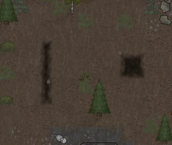
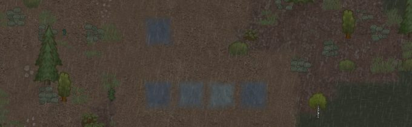
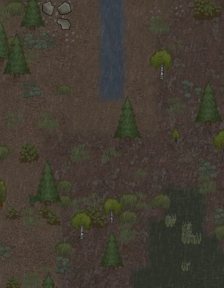
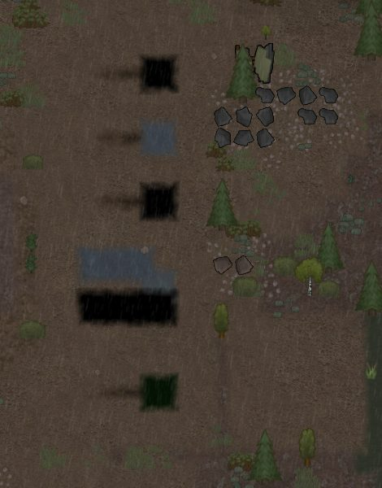
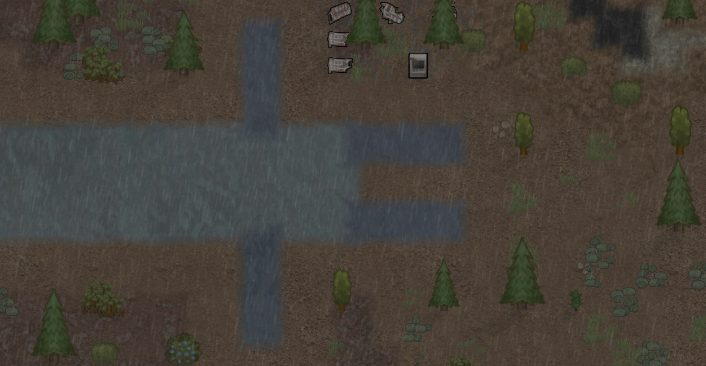
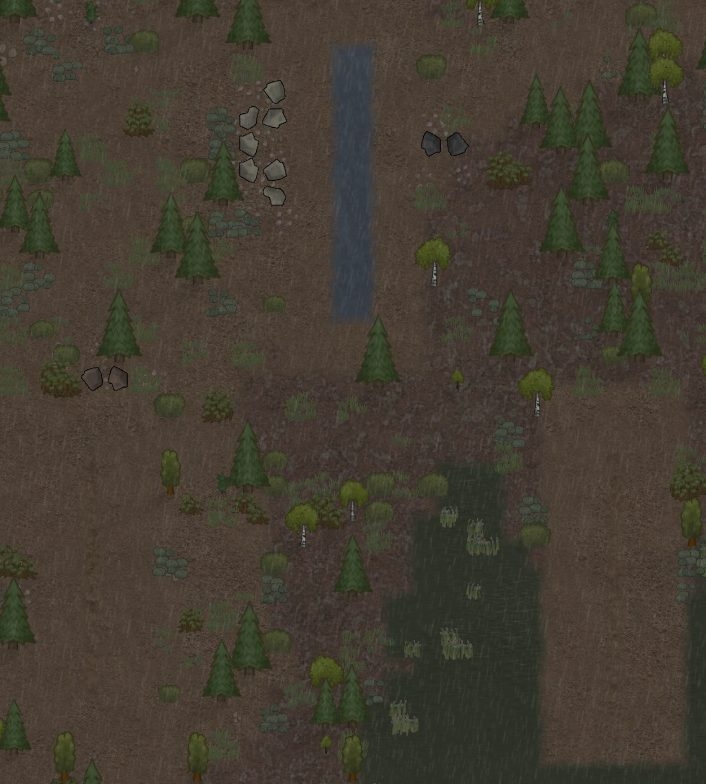
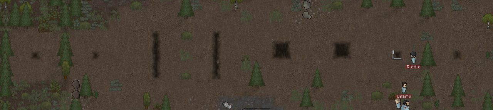
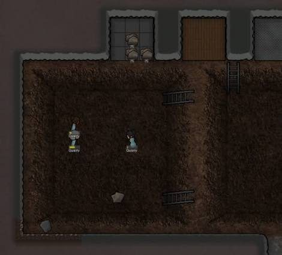
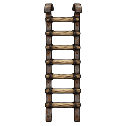
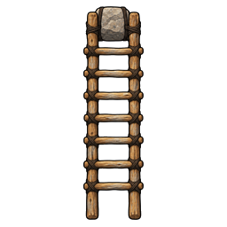

Generated 2026-10-06 06:55 from the code on disk, the newest live test result and the work list. The review sheet is where you mark things; this page is for reading.
45 features: 13 works in game · 21 built, not yet seen · 9 partly built · 2 not built
What I need from you
Pick the ladder drawing: A or B: Two ladder drawings were made on 16 Sept and never picked; until you pick, the ladder borrows the vanilla spike-trap picture. Both were drawn before your Quarry-perspective ruling, so 'Not right' means: redraw it in perspective.
Sanity-check the first-guess numbers: You ruled these ship as first guesses and get tuned in live play. Say if any sounds wrong: people sink 0.3 of a tile per depth level (so pit walls stand 1.2x a person's height); spikes deal three stabs totalling about 40 for a person, 96 for a muffalo, 160 for a thrumbo; an enclosed pond feeds 5 canal tiles per tile of water; canal digging can turn up at most 5% of the ore in a map's rock; about 1 in 70 dug tiles turns something up.
Look at the 13 features that work in game, and say if they look right: A test in the running game proved each one works; only your eyes can say it looks and feels right. The pictures on each one are from that test.
One unbuilt part has no open work item: do you still want it?: Mark the feature Don't want if not; otherwise it gets filed.
Digging canals and pits
2 works in game · 1 built, not yet seen · 1 partly built
Works in game
You mark ground and a colonist digs a canal there; dig again to go one level deeper
There are four depths. The fourth is a pit: nothing more than the deepest dug ground.

Live test, 5 Oct: a dug trench and a pit side by side (the test site's depth ladder)
Works in game
You can fill a canal back in, and the liquid in it is pushed along, not deleted
Only liquid with nowhere at all to go is lost, and the game counts it.

Live test, 5 Oct: open vs roofed trenches in rain, a filled-in canal, and a dig order
Built, not yet seenpart of it was seen working in the game
Trenches slow people down: deeper is slower, flooded is slower still, and a pit can't be crossed
A dug line is a real barrier you can build defences with.
Partly built
Digging a canal sometimes turns up local minerals, with a letter the first time each one appears
Deep cuts can reach the minerals deep drills find; where there are none, you get chunks of local rock.
Still to build: finds following the shared list of which minerals belong where.
Liquid in canals and ponds
5 works in game · 3 built, not yet seen · 1 not built
Works in game
Liquid spreads along a canal from its pond, in every direction, and stays inside the dug channel
It moves in steady pulses, the same way every time; two canals off one pond both fill. Switching the engine off in settings freezes every canal where it is.

Live test, 5 Oct: water spreading down a canal from its pond
Works in game
Each liquid keeps its own nature: tar crawls while water runs, and a canal shows the liquid it came from
Water fed from water looks like water; tar fed from tar looks like tar.

Live test, 5 Oct: people standing at each depth, a water and a tar canal, a slime pit, and a pit cover
Built, not yet seen
Two different liquids never mix: where their fronts meet, both stop
Drain one side and the other moves in. Old saves keep their liquids.
Works in game
Any pond is a source: a lake touching the map edge never runs dry; an enclosed pond runs out
An enclosed pond feeds about five canal tiles for each tile of water, then the flow stops.

Live test, 5 Oct: a pond feeding canals in four directions
Built, not yet seenpart of it was seen working in the game
A pond visibly shrinks as it pays out, and slowly refills from rain, season and seepage
You can see a source being drawn down.
Live test, 5 Oct: a pond feeding canals in four directions
Works in game
Rain fills open trenches; roofed ones stay dry
Live test, 5 Oct: open vs roofed trenches in rain, a filled-in canal, and a dig order
Works in game
A canal that runs off the edge of the map drains away
A canal ending inside the map holds its water.

Live test, 5 Oct: a canal running to the map edge, where it drains away
Built, not yet seen
Canyon floods run through your canals instead of wiping them out
Not built
Slime is nearly impossible to cross and slow to climb out of
Your words: so slippery it is nearly uncrossable.
Still to build: slime being nearly impossible to cross and slow to escape.
Fire and corrosion
3 built, not yet seen
Built, not yet seen
Fire or an explosion lights tar, oil or propane, and the flame travels along the canal
Tar and propane creep like a fuse you can outrun; fuels go up fast.
Built, not yet seen
A burning canal burns for days, spreads back into its pond, and sets anyone standing in it alight
About one canal level a day; a pond burns far longer. Corrosive liquids also eat whatever stands in them (that one is switched off by default).
Built, not yet seen
Foam or rain puts burning liquid out
Foam keeps it out while the foam lies there; rain has a chance on open ground.
Pits: catching
4 works in game · 4 built, not yet seen · 1 partly built
Works in game
Anything that falls into a pit cannot climb out
It stays where it is; its info line says it is trapped.

Live test, 5 Oct: pits of different widths with creatures in them; colonists at the ladder on the right
Works in game
A pit only holds a creature that fits: anything wider walks out, and narrowing a pit frees it
Your rule: the pit must be as wide as the creature.
Live test, 5 Oct: pits of different widths with creatures in them; colonists at the ladder on the right
Works in game
Falling in hurts, and only being forced, blown or jumping in does it: colonists never walk into an open pit
Live test, 5 Oct: pits of different widths with creatures in them; colonists at the ladder on the right
Built, not yet seen
Someone in a pit can only shoot, and be shot at, from the pit's edge
Raiders don't waste shots on them from further away.
Partly built
A 'jump in' button drops a colonist in on purpose; explosions and knockback can throw people in
Whoever jumps in is stuck there too.
Still to build: an explosion or knockback throwing someone into a pit.
Works in game
A pit cover hides the hole and looks like the ground around it
A faint seam shows only at the closest zoom.
Live test, 5 Oct: people standing at each depth, a water and a tar canal, a slime pit, and a pit cover
Built, not yet seen
Step on a cover and you fall through; three cover builds bear different weights
Plank lattice, woven scrap, reinforced frame.
Built, not yet seen
Spikes at the bottom stab whoever falls in: badly, scaled to their size, never instantly fatal
Walking up to the spikes is harmless; only a fall triggers them.
Built, not yet seen
Flood an occupied pit to drown, poison or burn whoever is in it
Water drowns non-swimmers, poison builds up, oil can be lit; open a gate to let the liquid in.
Pits: holding prisoners
1 works in game · 3 built, not yet seen
Works in game
A ladder: lowered, people climb out; raised, they're stranded
It works like a prison door. Ladders only go on dug ground.
Live test, 5 Oct: pits of different widths with creatures in them; colonists at the ladder on the right
Built, not yet seen
A walled-in pit is a room; add a prisoner bed and it's a prison you run from the edge
Wardens feed, tend, capture, recruit and convert from the lip without climbing down; nothing too wide is offered.
Built, not yet seen
An open pit bakes by day and freezes by night, wearing down a prisoner's resistance
Colonists whose beliefs mind cruelty are upset by it; psychopaths are not.
Built, not yet seen
Sluice gates and grate doors let liquid through but hold creatures and prisoners
They can't be opened from inside the pit; open one to let a held creature walk out.
How it looks
1 works in game · 5 partly built
Works in game
People sink as the ground deepens and rise as they climb out; in a pit the walls stand over their head
Someone in slime is drawn sunk into it, not standing on top.
Live test, 5 Oct: people standing at each depth, a water and a tar canal, a slime pit, and a pit cover
Partly built
A canal looks dug, not like a gravel path, and shows how full it is
Trace, half and brimming fills look different; trenches read as obstacles without a tooltip.
Still to build: a dug canal looking dug, not like a gravel path; trenches looking like obstacles without a tooltip.
Live test, 5 Oct: a dug trench and a pit side by side (the test site's depth ladder)
Partly built
Pit walls are drawn with depth, Quarry-style, so a pit reads as one big dark hole
Every depth looks different; an occupied pit reads differently from an empty one; never like a building.
Still to build: an occupied pit reading differently from an empty one; painted pit-wall art for all four depths; a pit reading as a big dark hole; a large pit reading as one place, not a grid of tiles; a bare pit never looking like a building; depth and fill both readable at once.

Your reference (16 Sept): the Quarry mod's pit walls, the look the pit art is aiming for
Partly built
Spikes, ladders and gates have their own drawings, not borrowed vanilla ones
Today the ladder still borrows the vanilla spike trap; gates borrow the vanilla door.
Still to build: spike art where some spike shows; ladder art, raised and lowered; a gate looking open or shut at a glance (its own art); no pit part borrowing the vanilla spike-trap drawing.

Ladder drawing A (16 Sept): scrap-metal rails, lashed rungs

Ladder drawing B (16 Sept): pegged desert timber with a stone counterweight
Partly built
Tar looks thick and sticky; slime looks thick and opaque, not tinted water
Still to build: slime looking thick and opaque, not tinted water.
Partly built
Burning liquid looks alight, and a burnt-out canal looks scorched
Today it uses the vanilla fire and ash.
Still to build: burning liquid looking alight (its own art); a burnt-out canal looking scorched (its own art).
Bottles, tanks and pumps
4 built, not yet seen
Built, not yet seen
Bottles, buckets and barrels: fill at a shore or tank, use, wash and reuse
Boiling water cools and blood spoils in a bottle; bottles are tagged for a future cooking mod.
Built, not yet seen
Tanks store liquid; pumps move it from ponds and canals; hoses and adapters connect it all
One full tank holds about five canal tiles of liquid.
Built, not yet seen
Drills and taps bring underground liquids up, and cleaned water feeds thirst
Built, not yet seen
Ruined industrial liquid plants (desalination, tar refinery, pumping station) are found and repaired
Never built from the menu in the campaign.
Rivers, shores and the land
3 built, not yet seen · 2 partly built · 1 not built
Built, not yet seen
Many liquids exist as ground: brine, boiling water, propane, acid and more, each with its own flood, rain, river, lake and sea
Nobody goes swimming in sand for fun.
Built, not yet seen
New maps get shores of the local liquid, and hot rivers steam in colour
The shores change only newly generated maps.
Partly built
A water-fed canal improves the land: a swale turns sand into soil, and crops beside it count as watered
In the campaign the swale stays locked until found; its art comes from a real canal.
Still to build: the swale being locked in the campaign until found; swale art drawn from a real canal; crops beside a filled canal counting as watered.
Partly built
Rivers get current, ford stones, weirs, bank works, breaches in floods, fish catches and ferries
Still to build: silt traps, stake lines and hoppers on river banks.
Not built
Pan a river for gold, or set a sluice box to sift ore from a stream
Still to build: a sluice box slowly sifting ore from a stream; panning a river for gold.
Built, not yet seen
Every mechanic can be switched off in Mod Settings, and with everything off the mod still digs dry canals
What remains to build
Waiting on you
Swale art drawn from a real canal. (A water-fed canal improves the land: a swale turns sand into soil, and crops beside it count as watered)
Nothing in the way: ready to build
Finds following the shared list of which minerals belong where. (Digging a canal sometimes turns up local minerals, with a letter the first time each one appears)
Slime being nearly impossible to cross and slow to escape. (Slime is nearly impossible to cross and slow to climb out of)
An explosion or knockback throwing someone into a pit. (A 'jump in' button drops a colonist in on purpose; explosions and knockback can throw people in)
A dug canal looking dug, not like a gravel path; trenches looking like obstacles without a tooltip. (A canal looks dug, not like a gravel path, and shows how full it is)
An occupied pit reading differently from an empty one; painted pit-wall art for all four depths; a pit reading as a big dark hole; a large pit reading as one place, not a grid of tiles; a bare pit never looking like a building; depth and fill both readable at once. (Pit walls are drawn with depth, Quarry-style, so a pit reads as one big dark hole)
Spike art where some spike shows; ladder art, raised and lowered; no pit part borrowing the vanilla spike-trap drawing. (Spikes, ladders and gates have their own drawings, not borrowed vanilla ones)
Slime looking thick and opaque, not tinted water. (Tar looks thick and sticky; slime looks thick and opaque, not tinted water)
Burning liquid looking alight (its own art); a burnt-out canal looking scorched (its own art). (Burning liquid looks alight, and a burnt-out canal looks scorched)
The swale being locked in the campaign until found; crops beside a filled canal counting as watered. (A water-fed canal improves the land: a swale turns sand into soil, and crops beside it count as watered)
Silt traps, stake lines and hoppers on river banks. (Rivers get current, ford stones, weirs, bank works, breaches in floods, fish catches and ferries)
A sluice box slowly sifting ore from a stream; panning a river for gold. (Pan a river for gold, or set a sluice box to sift ore from a stream)
Not built, and no open work item for it
A gate looking open or shut at a glance (its own art). (Spikes, ladders and gates have their own drawings, not borrowed vanilla ones)